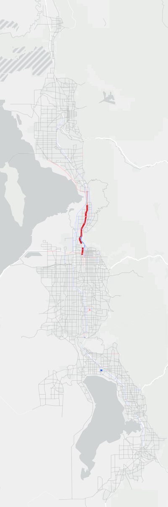
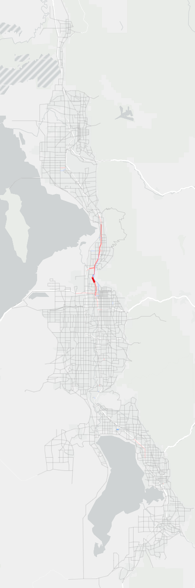

Compare Model Results
This section compares the model results between version 9.0.2 and version 9.0.1-patch2.
Road Volume Comparisons
The comparison between daily volumes at the segment level can be found in Figure 1 for 2019 and 2050. Decreases in volume in version 9.0.2 compared to version 8 are shown in blue, while increases are shown in red.
For 2019, Salt Lake and northern Davis counties display a drop in roadway volumes, most apparent on I-15. Weber, southern Davis, and Utah Counties show increases. Most of the changes are relatively minor, with the largest decreases occurring on the freeways in Salt Lake County. However, given the large daily volume for these roadways, the percent change is relatively low.
For 2050, there are decreases in volumes on I-15 in Salt Lake and northern Davis counties. Weber and northern Davis counties show overall increase in roadway volumes. Utah County shows the most change with the two Utah Lake crossings not part of the 2050 fiscally constrained scenario. The resulting drop in volumes is evident with increases on I-15.
The comparison of daily medium and heavy truck volumes is found in Figure 2 for 2019 and 2050. Truck volumes decreased in the northwest portion of Salt Lake County.






Transit Comparisons
Transit comparisons were done with ridership, trips mode share, and boardings mode share. Overall ridership increases significantly in version 9, and Core Bus ridership takes a larger share of trips and boardings than in version 8.
Transit Ridership
Transit ridership in version 9 compared to version 8 shows significant increase in 2032, 2042, and 2050. See Figure 3 through Figure 9. The total ridership in 2050 for version 9 is 327,000 daily trips compared to the version 8 model that showed 258,000 daily trips, which equates to 26% more trips. The additional trips is largely due to the improvements in commuter rail with increased frequency and speed together with the change in the model sensitivity to changes in headway.
Transit ridership by modes are shown in the following set of figures. Light-Rail Transit sees an increase through 2028 and then a large decrease in 2032. This large decrease can be explained by the shift of riders from Light Rail to Core Bus routes, with a large number of core routes coming online in 2032.